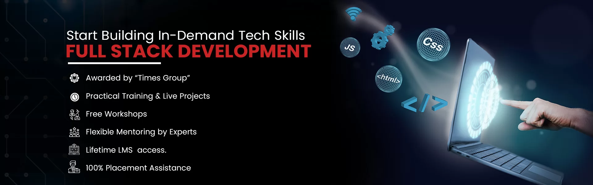
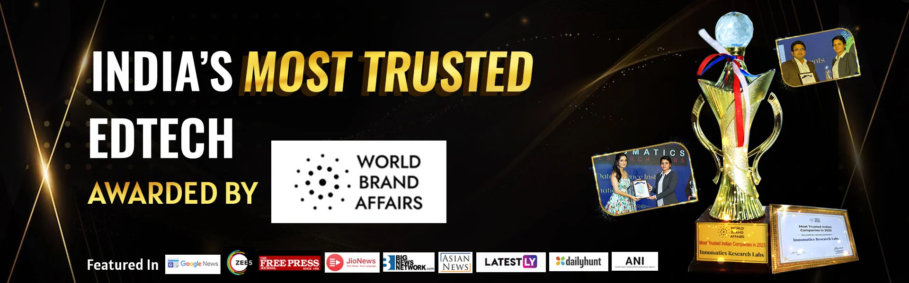
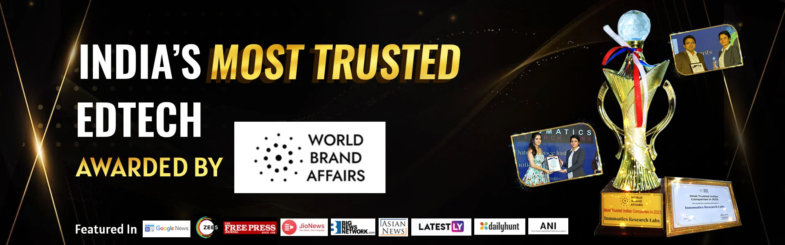
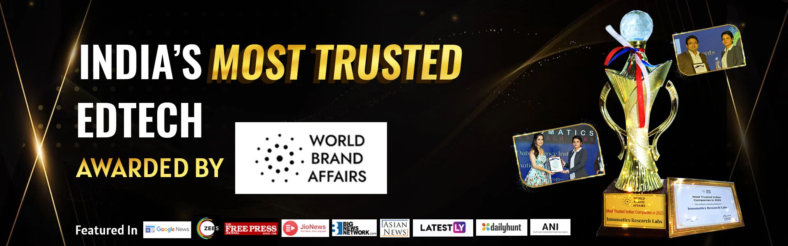
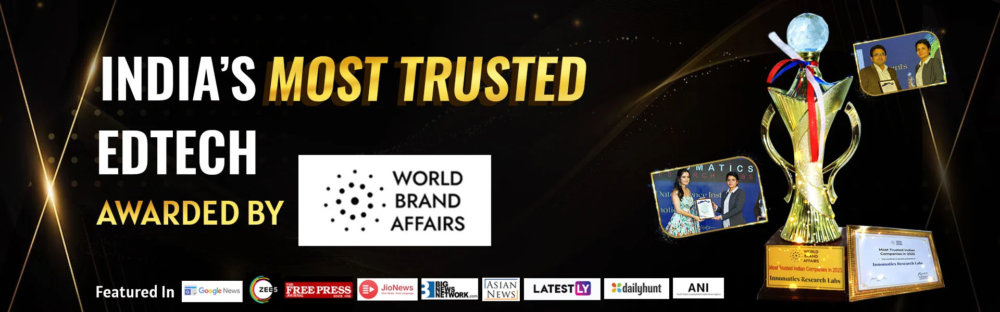

 


Enquire Now:

Innomatics Research Labs is a pioneer in “Transforming Careers and Lives” of individuals in the Digital Space by catering advanced training on NASSCOM Future Skills Prime Certified Data Science, Python, Predictive Analytics Modeler, Machine Learning, Artificial Intelligence (AI), Generative AI, Full-stack web development, and Career Launching programs for students. Those who are willing to showcase their skills in the competitive job market with valuable credentials can complete courses with a certificate.
As an authorized NASSCOM FutureSkills Prime Training Partner, we are dedicated to providing practical and real-world learning experiences. Our training includes case studies and business challenges to ensure job-ready skills. We also organize regular hackathons, workshops, and meetups to enhance learning and productivity. With a dedicated placement team, we partner with over 100 companies to match them with skilled professionals, helping businesses grow while shaping successful careers.
Recognized by Times of India as the Best Training Institute in Hyderabad for Data Science & Digital Marketing, we have trained and placed over 10,000 students, conducted 350+ batches, and helped thousands build successful careers.

This is a great choice for tech geeks, students, working professionals and aspiring data scientists who want to upskill and build a better foundation is the stream of Data Science.
>
Learn the right skills to break into a development career & advance yourself as a full-stack Developer. It includes Frontend, Backend, databases, debugging & testing.
>
Generative AI Course at Innomatics is perfect for students, job seekers, entrepreneurs, and professionals who want to learn the latest AI tools and skills to grow in their careers.
>